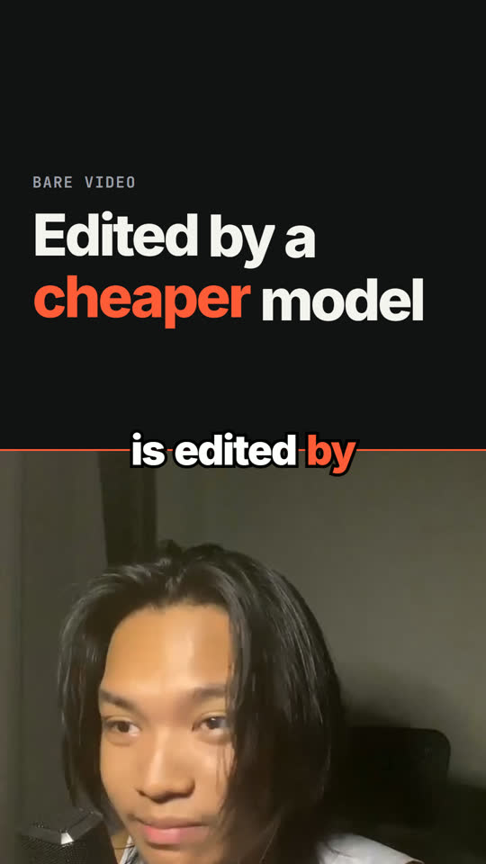
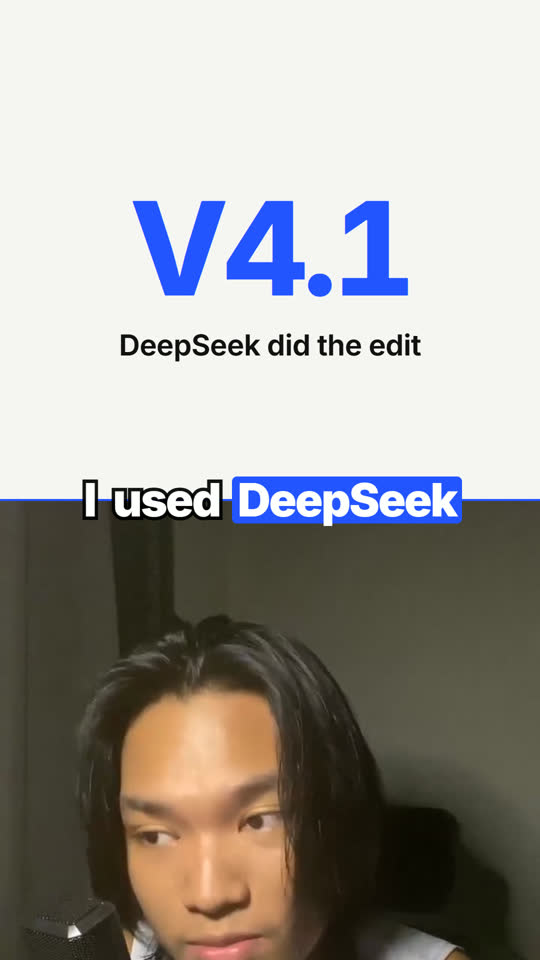
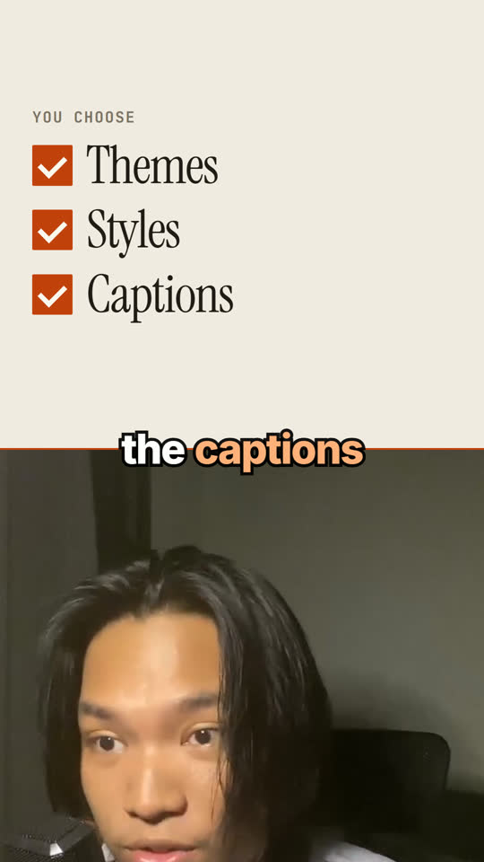
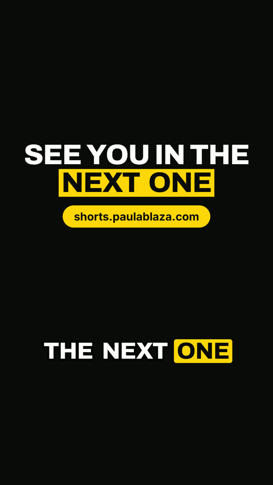

Your coding agent can edit your videos.
Bare Video is a free skill for Claude Code, Codex, OpenCode or any agent that can run commands. It cuts your talking-head video, adds captions timed to every word and simple graphics, and exports a vertical short for TikTok, Reels and Shorts.
Edit my video with Bare Video. 1. If there is no bare-video folder here, run: git clone --depth 1 https://github.com/barestack-labs/bare-video 2. Read bare-video/SKILL.md and follow its steps in order. My video:
Add the path to your video after "My video:", or let the agent ask. It will also ask how long the short should be, which look you want, and what captions you want.

Four starting looks
These are real frames rendered by the template, not mockups. Your agent can change the colour, or you can make your own look.



How it works
- Transcribe. Your speech becomes words with exact times. Groq does this for free with an API key, or it can run on your computer.
- Choose what to keep. The agent reads the transcript and keeps your best takes. Pauses and repeated starts are cut automatically.
- Plan the visuals. The agent writes a short plan: a title here, a list there, a number when you say one. A checker rejects made-up numbers, text that is too long and scenes that are too short.
- Preview. You watch it in the browser and ask for changes in plain words.
- Export. It renders 1080x1920, sets the loudness, checks the file, and asks before deleting the temporary files.
The agent only writes two small plan files. Scripts handle the cutting, timing and layout, which is why smaller, cheaper models can do it too.
What you need
- A coding agent that can read files and run commands in a folder.
- Node.js 22+ and FFmpeg. The agent checks for them and tells you what is missing.
- HyperFrames, the open-source renderer: about 250 MB, installed once for all your videos.
- A free Groq key for transcription. It goes in a
.envfile, never in the chat.
videos/ open this folder in your agent bare-video/ the skill node_modules/ HyperFrames, shared .env your key car-review/ one folder per video source.mp4 assets/ your images and clips final.mp4
Questions
Is it free?
Yes. Bare Video is MIT licensed. HyperFrames and FFmpeg are free. Groq's transcription has a free tier. You pay only for the coding agent you already use. Smaller, cheaper models can follow it too, because scripts do the error-prone parts.
Does my video get uploaded anywhere?
The video stays on your computer. For cloud transcription, only a small compressed copy of the audio goes to Groq or Deepgram. Choose on-device transcription if you do not want that.
Will it fill my disk?
No. It never copies your source video. Temporary files go in one work/ folder, and the agent offers to delete it after export. A few kilobytes of plan files stay, so you can re-make the edit later.
Will it make things up?
It is told not to, and the checker enforces part of it: a number on screen must be one you said, or come from a source you gave it. Images and clips come only from your assets/ folder.
What kind of videos does it suit?
One person talking to the camera, filmed on a phone or webcam: reviews, recipes, tips, tutorials, workouts, stories. It is not made for multi-camera shoots or long YouTube edits.
Can I change how it looks?
Yes. Ask the agent for a different accent colour, or copy the repo and edit the looks and scene types yourself. docs/customize.md shows how.